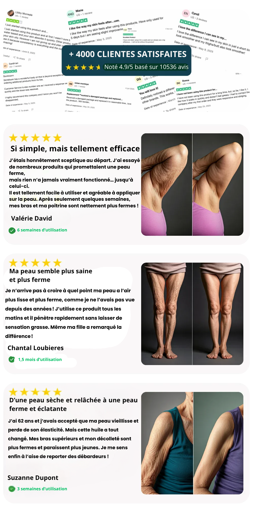

MISE À JOUR : En raison d'un article devenu viral, les stocks de AUREVA® sont très limités. Agissez vite !
MISE À JOUR : En raison d'un article devenu viral, les stocks de AUREVA® sont très limités. Agissez vite !
Le secret que l'industrie cosmétique espérait que vous ne découvririez jamais...
Voici comment les femmes de plus de 50 ans peuvent retrouver une peau plus ferme et plus lisse, même si rien n'a fonctionné jusqu'à présent.
Comment je me suis enfin débarrassée de ma peau fripée et relâchée - naturellement, sans douleur et sans dépenser des milliers d'euros en traitements.


Pendant près de huit ans, une guerre silencieuse s'est jouée chaque matin dans ma salle de bain.
Mon ennemie ? Cette peau relâchée et fripée sur mes bras, mes cuisses et ma poitrine, qui semblait me trahir un peu plus chaque jour.
Au début, c'était subtil. Ma peau ne "rebondissait" plus comme avant. Alors j'ai fait tout ce qu'on nous dit de faire : hydratation religieuse, boire des litres d'eau, prendre soin de moi…
Mais la vérité, c'est que quoi que je fasse, ma peau vieillissait plus vite que mon esprit.
J'ai investi des centaines, voire des milliers d'euros dans des crèmes "haut de gamme", des sérums prometteurs et des poudres de collagène.
Le résultat ? Toujours le même.
Une sensation agréable pendant quelques heures… puis le retour de cet aspect flasque et terne, comme un rappel cruel du temps qui passe.
C'en est arrivé au point où j'ai rayé les débardeurs et les robes sans manches de ma garde-robe.
Même en plein été, je me couvrais, incapable de supporter le reflet de mes bras dans le miroir. Chaque regard était une piqûre qui érodait ma confiance en moi.
Je ne me reconnaissais plus.
J'ai tout essayé – et je dis bien tout
Un dermatologue m'a dit de "simplement l'accepter comme une fatalité du vieillissement."
Une autre clinique a tenté de me vendre des traitements laser coûteux, en me parlant de "forfaits" à plusieurs milliers d'euros.
Je me sentais piégée, découragée... et honnêtement, un peu flouée.
Mon étagère de salle de bain était un cimetière de promesses non tenues – des pots et des flacons à moitié vides, abandonnés par dépit.
Rien ne semblait pénétrer assez profondément pour initier un vrai changement.
À un moment, le doute s'est installé…
"Et si c'était ça, la fin ?"
"Est-ce qu'il n'existe vraiment plus rien pour redonner vie à une peau mature ?"
Mais une petite voix en moi refusait de baisser les bras.
Et c'est en cherchant sans relâche que j'ai découvert quelque chose qui a tout changé.

Le tournant : La révélation qui explique pourquoi TOUTES mes crèmes ont échoué
Je suis tombée sur un article d'une dermatologue anti-conformiste qui a mis des mots sur ce que je ressentais depuis des années :
“La plupart des produits raffermissants n'échouent pas parce que leurs ingrédients sont inefficaces…”
“Ils échouent parce que leur formule épaisse ne peut physiquement pas atteindre les couches profondes du derme, là où le relâchement prend racine.”
Cette phrase a été une véritable révélation.
C'était exactement ça ! Toutes mes tentatives étaient superficielles. Rien n'agissait assez en profondeur pour reconstruire ce qui s'était affaissé.
Mais alors, comment atteindre cette "fondation" de la peau pour la reconstruire de l'intérieur ?
La réponse se trouvait dans de nouvelles recherches cliniques, et elle n'avait rien à voir avec des lasers ou des injections.
La solution était de nourrir la peau au niveau cellulaire avec des nutriments qu'elle peut réellement absorber, pour "réveiller" sa propre capacité à produire collagène et élastine.
Le grand mensonge des crèmes corporelles (et ce qui change tout)
Voici la dure vérité :
La fermeté et l'élasticité de votre peau dépendent d'une matrice de collagène et d'élastine, située dans le derme, bien sous la surface.
Le choc ? Après 45 ans, la production de collagène chute de près de 50%. C'est ce qui provoque l'affaissement.
Et voici le problème que l'industrie cache :
Les molécules des crèmes classiques sont trop grosses. Elles ne peuvent pas traverser la barrière cutanée pour atteindre le derme.
C'est comme essayer de nourrir une plante en arrosant ses feuilles au lieu de ses racines.
Elles hydratent la surface de la peau, la rendant douce pour quelques heures...
Mais elles ne réparent absolument rien en profondeur.
Aucune stimulation du collagène.
Aucun renforcement de la structure.
Aucun résultat durable.
C'est pour cette raison que votre peau retrouve inévitablement cet aspect "papier crépon" — malgré tous vos efforts.

Le "Code de la Jeunesse" en 3 étapes que j'ai découvert
Ce qui a fonctionné pour moi n'était pas une autre crème. C'était un rituel simple en 3 actions qui a enfin nourri ma peau en profondeur :
Étape 1 : Sceller l'hydratation pour reconstruire la barrière protectrice
Avec l'huile de ricin, la peau est protégée de la déshydratation. Cela crée un bouclier qui permet à la peau de se concentrer sur sa propre réparation — un point crucial pour les peaux affinées par l'âge.
Étape 2 : Nourrir en profondeur avec des huiles bio-compatibles
Un duo puissant d'huile de jojoba et de vitamine E apporte les acides gras et antioxydants essentiels pour soutenir l'élasticité et protéger la peau des agressions qui accélèrent le vieillissement.
Étape 3 : Réveiller la peau en stimulant la micro-circulation
L'huile de Romarin agit comme un véritable "shot d'énergie" pour la peau terne. En relançant la circulation, elle aide la peau à retrouver son tonus, son éclat et sa vitalité naturelle.
Cette approche synergique est devenue mon "rituel de renaissance" — et a littéralement transformé l'apparence et le toucher de ma peau.
La science derrière la magie : Les actifs qui ont tout changé

Une fois que j'ai compris que la peau mature avait besoin de réparer sa barrière et d'être nourrie en profondeur, j'ai arrêté de chercher des miracles.
Je cherchais une formule intelligente capable de :
- ✅ Protéger et renforcer la peau affinée et fragile
- ✅ Restaurer l'hydratation et l'élasticité perdues
- ✅ Apaiser, lisser et redonner du "rebondi"
Et c'est là que j'ai identifié le quatuor gagnant :
🌿 Vitamine E
L'héroïne de la réparation.
Elle calme les irritations, booste le "rebondi" et scelle l'hydratation. Ma peau est devenue plus forte, moins réactive.
💛 Huile de Jojoba
L'or liquide que votre peau reconnaît.
Sa composition est si proche du sébum naturel qu'elle pénètre instantanément, sans effet gras, pour redonner cet éclat de jeunesse que je croyais perdu.
💧 Huile de Ricin
Le bouclier protecteur.
Elle crée un film invisible qui garde l'hydratation à l'intérieur et les agressions à l'extérieur. Adieu la peau rêche et qui tiraille !
🌱 Huile de Romarin
Le "réveil-matin" de la peau.
Elle a redonné vie à ces zones affaissées et froissées — en particulier sur ma poitrine et l'intérieur de mes cuisses.
Le résultat ? Ma peau n'était pas juste hydratée — elle était visiblement plus ferme, plus lisse, et pleine de vie.
Ce n'était pas une lotion de plus. C'était la première fois que je sentais un soin corporel transformer réellement ma peau.
C'est beaucoup d'informations, j'ai donc créé ce visuel pour résumer :

La solution incarnée : L'Huile Corporelle Liftante AUREVA®
Cette synergie précise d'ingrédients est ce qui m'a convaincue d'essayer une dernière chose.
Une marque dont je n'avais jamais entendu parler – mais dont la formule était spécifiquement conçue pour la peau mature du corps, et non une simple déclinaison d'un soin visage.
AUREVA® Lifting Body Oil
Une huile réparatrice conçue pour cibler la peau affinée, froissée et relâchée – en particulier sur les bras, les jambes et la poitrine.
Sa force ? Contrairement aux crèmes, sa formule imite les lipides naturels de la peau. Elle est donc absorbée instantanément et en profondeur – sans jamais être collante ou grasse.
Ce qui a balayé mes dernières hésitations ?
- ✅ Formulée avec des ingrédients approuvés par des dermatologues comme l'huile de Jojoba et la Vitamine E.
- ✅ Sans parfum de synthèse et si douce qu'elle convient aux peaux les plus sensibles.
- ✅ Créée spécifiquement pour les femmes de 45 ans et plus, pas une formule "taille unique".
- ✅ Approuvée par des milliers d'avis 5 étoiles et soutenue par une garantie "résultats ou remboursée" de 60 jours.
J'étais encore sceptique (on ne se refait pas !). Mais après avoir lu des dizaines de témoignages, je me suis dit : Au fond, qu'est-ce que je risque ?
Alors, j'ai passé commande.

Honnêtement, je n'y croyais plus... mais ce qui a suivi m'a laissée sans voix.
J'ai essayé tant de produits au fil des ans. Quand AUREVA® est arrivé, je l'ai appliqué sans conviction, comme tous les autres "miracles" avant lui — avec zéro attente.
Mais dès les premières secondes, j'ai senti une différence. L'huile a été bue par ma peau. Pas de film gras. Et pour la première fois, j'ai eu l'impression que le soin ne restait pas en surface — il pénétrait vraiment.
Jour 4 : Ma peau n'était plus "en papier de soie"
Cette sensation de peau fine et fragile qui se plisse au moindre contact ? Envolée. En à peine quatre jours, mes bras étaient visiblement plus souples, plus forts. Pas juste hydratés, mais réellement nourris.
Semaine 2 : Mon mari a dit : "Ta peau est plus belle"
Et croyez-moi, il ne remarque JAMAIS rien. Je me suis regardée dans le miroir, et je n'ai pas vu du relâchement. J'ai vu une peau qui commençait à retrouver sa densité, son rebondi.
Semaine 4 : J'ai remis un débardeur. Et j'ai souri.
Je l'ai porté pour sortir. En plein jour. Et je n'ai pas passé mon temps à tirer dessus ou à vouloir me cacher sous un gilet. Je me sentais bien. Libre. À nouveau moi.
"Je ne suis pas la seule." Des milliers de femmes retrouvent leur confiance.
Pourquoi les résultats sont durables (la vraie différence)
La plupart des produits vous donnent une illusion de résultat qui s'estompe en une journée. Mais voilà la surprise : même quand j'oubliais d'appliquer AUREVA® un jour ou deux, ma peau restait ferme et lisse.
C'est là que j'ai compris : Ce n'était pas un simple soin de surface. C'était une véritable reconstruction qui s'opérait de l'intérieur.
C'est comme nourrir une plante assoiffée à la racine. Une fois que vous réparez les fondations, votre peau réapprend à se soutenir elle-même.
Après 3 mois d'utilisation :
- Mes bras ne semblaient plus "dégonflés"
- Mes cuisses ne montraient plus cet aspect "peau d'orange"
- Mon décolleté était visiblement plus lisse et défroissé
Et contrairement aux traitements laser que j'avais failli faire (radiofréquence, ultrasons), cela ne m'a pas coûté une fortune ni imposé de temps de convalescence.

Pourquoi j'ai dit adieu aux traitements esthétiques coûteux
J'ai déjà payé 400€ pour une crème "raffermissante" de luxe. Le seul effet a été de vider mon portefeuille. J'ai aussi consulté pour des séances de laser raffermissant.
Le devis ? Au moins 6 séances à 700€ chacune — sans aucune garantie de résultat. Avec en prime le risque de brûlures et d'irritations. Non merci.
C'est ça, le piège. On nous fait croire que la seule issue est une procédure invasive ou une dépense exorbitante.
Mais la vérité est plus simple :
Vous n'avez pas besoin de souffrir ou de vous ruiner pour vous sentir à nouveau bien dans votre peau.
Vous avez simplement besoin d'une solution qui soutient la structure de votre peau de l'intérieur. AUREVA® est devenu mon alternative intelligente.
Naturelle. Abordable.
Approuvée par la science — et par des résultats que je vois et ressens chaque jour.
Les 3 erreurs que la plupart des femmes font avec leur peau mature
Si je pouvais remonter le temps, voici ce que je me dirais :
“Ce n'est pas ta peau qui a un problème.
C'est juste que tu n'as jamais utilisé le bon outil.”
Je réalise aujourd'hui que j'ai commis les mêmes erreurs que la plupart des femmes de plus de 50 ans — des erreurs qui m'ont coûté des années de complexes.
❌ Erreur #1 : Utiliser des soins visage sur le corps
La peau de vos bras, de vos cuisses et de votre ventre est plus épaisse et a des besoins différents. Elle exige plus de nutrition, plus de soutien et une pénétration plus profonde pour retrouver sa fermeté.
Appliquer une crème visage sur votre corps, c'est comme utiliser un contour des yeux sur vos pieds. C'est tout simplement inadapté.
❌ Erreur #2 : Penser que "hydratation" = "fermeté"
J'étais obsédée par l'hydratation, pensant que c'était la solution à tout. Grosse erreur.
Pourquoi ? Parce que l'hydratation seule ne reconstruit pas la structure.
Sans une stimulation directe du collagène et de l'élastine, votre peau restera douce en surface, mais toujours aussi relâchée en profondeur.
❌ Erreur #3 : Abandonner trop vite
Quand j'essayais un nouveau produit, je lui laissais une semaine. Si au 7ème jour je ne ressemblais pas à une version plus jeune de moi-même, je le mettais au placard.
Mais la véritable réparation cutanée demande du temps et de la constance.
On ne peut pas effacer 20 ans de perte de collagène en une nuit.
Mais avec la bonne approche, on peut voir des changements spectaculaires en 3 à 4 semaines — à condition de persévérer.
Mon conseil : commandez 2 ou 3 flacons, pas un seul
Ma seule erreur avec AUREVA® ? N'avoir commandé qu'un seul flacon la première fois.
Je l'ai utilisé religieusement, et après deux semaines, les résultats devenaient vraiment excitants. Mais avant la fin du mois... le flacon était vide.
Le temps que le second arrive, j'ai senti ma peau redevenir plus sèche, moins tonique. J'ai dû repartir de zéro.
C'est là que j'ai compris : La régularité est le secret. Interrompre le processus, c'est saboter ses propres résultats.
Aujourd'hui, j'ai toujours un flacon d'avance.
...Et quand mes amies me demandent conseil, je leur dis toujours :
“Prenez-en au moins 2 – idéalement 3 – pour assurer une transformation ininterrompue.”
Heureusement, AUREVA® propose une offre spéciale jusqu'à -50% sur les lots :
- 1 Flacon – Idéal pour découvrir
- 3 Flacons (2+1 offert) – Le choix le plus populaire pour une transformation visible
- 4 Flacons (3+1 offerts) en plus d'un Kit Massant Anti Peau d'Orange offert – Le meilleur rapport qualité-prix pour des résultats optimaux et durables
C'est ce que j'aurais dû faire dès le départ.
Ma conclusion finale
Si vous êtes arrivée jusqu'ici, c'est que vous êtes sans doute où j'en étais : lassée des promesses en l'air et prête pour quelque chose qui fonctionne.
AUREVA® n'est pas un produit miracle. C'est une solution intelligente, fondée sur la science, et formulée spécifiquement pour la peau mature de notre corps.
Et si vous êtes comme moi, vous savez que votre peau (et votre confiance) méritent ce qu'il y a de mieux.
Je n'ai jamais regretté cette décision — et je suis convaincue que vous non plus.
👉 Cliquez ici pour essayer AUREVA® sans risque pendant 30 jours
- ✓ Jusqu'à 50% de réduction sur les lots
- ✓ Expédition rapide et offerte
- ✓ Garantie 100% satisfaction ou remboursée
Mise à jour : En raison de la forte demande, l'Huile Corporelle Liftante AUREVA® est souvent en rupture de stock. Agissez maintenant pour sécuriser vos flacons pendant que notre offre de lancement est encore active.
Valable uniquement jusqu'à épuisement des stocks.
Lorsqu'un lot est épuisé, il faut souvent 6 à 8 semaines avant le réassort de AUREVA®.
C'est pourquoi je recommande vivement le lot de 3 bouteilles — vous êtes ainsi assurée de ne subir aucune interruption dans votre transformation.
Trop de femmes m'ont dit n'avoir commandé qu'une seule bouteille pour "juste essayer".
Mais une fois les premiers résultats bluffants apparus, elles ont voulu continuer... et c'est là que le produit était en rupture de stock.
Le problème est simple :
Pour restaurer la fermeté durablement, la régularité est non-négociable.
Quand la routine est interrompue pendant un mois, une partie des progrès s'estompe.
C'est incroyablement frustrant... car il faut tout recommencer.
Mon conseil est donc simple :
Offrez-vous la cure complète de 3 mois dès le départ.
Votre achat est 100% protégé.
Si vous n'êtes pas absolument ravie de vos résultats, vous êtes intégralement remboursée.
Cette garantie en béton n'est possible que parce que plus de 97% des femmes qui utilisent AUREVA® constatent des améliorations visibles et sont enchantées.
Un clic ci-dessous vous mènera à la boutique officielle de AUREVA®.
Vous pourrez y vérifier si le produit est encore disponible aujourd'hui.
Vérifier la disponibilité →Ce que j'aime chez AUREVA® – et ce que je n'aime pas
Soyons honnêtes : ce n'est pas une potion magique.
Mais c'est le seul produit que j'ai essayé qui offre des résultats visibles et durables — sans produits chimiques agressifs, sans irritation, et sans fausses promesses.
Voici mon verdict :
✅ Ce que j'adore :
- Les résultats sur la fermeté sont réels et visibles en quelques semaines
- La formule non-grasse qui pénètre en un instant
- L'absence de parfum synthétique (un soulagement pour ma peau sensible)
- La peau est lissée, raffermie et hydratée en profondeur
- Assez douce pour un usage quotidien, même sur les zones fragiles
- Le flacon est magnifique dans ma salle de bain (oui, ça compte !)
⚠️ Les petits bémols :
- Uniquement disponible en ligne
- Souvent en rupture de stock (le mois dernier, j'ai dû attendre 2 semaines !)
- Exige de la régularité — ce n'est pas une solution express pour une soirée
Mais quand je vois ma peau aujourd'hui — et la confiance que je ressens en portant à nouveau ce que je veux — je peux dire sans hésiter :
Chaque goutte en valait la peine.
Foire Aux Questions
Q: Pour quelles zones du corps cette huile est-elle la plus efficace ?
AUREVA® a été formulée pour toutes les zones du corps où la peau a tendance à se relâcher : le haut des bras, l'intérieur des cuisses, le ventre, la poitrine et même la peau au-dessus des genoux. Elle est assez douce pour un usage quotidien sur peau sèche ou sensible.
Q: Puis-je l'utiliser sur mon visage ?
Bien que les ingrédients soient 100% naturels, cette huile a été optimisée pour la structure plus épaisse de la peau du corps. Pour des résultats optimaux, nous recommandons de l'utiliser uniquement du cou aux pieds.
Q: Est-ce que l'huile est grasse ou collante ?
Absolument pas. C'est l'une de ses plus grandes forces. Sa texture soyeuse pénètre en quelques secondes sans laisser de film gras. Vous pouvez vous habiller immédiatement après l'application sans craindre de tacher vos vêtements.
Q: Est-elle vraiment sûre pour les peaux sensibles ?
Oui – AUREVA® a été créé spécifiquement pour les femmes de 45 ans et plus, dont la peau est souvent plus réactive. Elle est :
- Sans parabènes, sulfates ou parfums de synthèse
- Testée par des dermatologues
- Hypoallergénique et végane
Q: Combien de temps dure un flacon ?
Avec une utilisation quotidienne sur les bras, le ventre et les cuisses, un flacon dure environ 3 à 4 semaines. C'est pourquoi le lot de 3 flacons est le plus populaire pour une cure complète de résultats.
Q: Au bout de combien de temps verrai-je une vraie différence ?
Beaucoup de femmes ressentent une peau plus lisse et hydratée en seulement 4 à 5 jours. Cependant, la véritable transformation sur la fermeté et le tonus devient visible après une utilisation régulière de 3 à 6 semaines. La patience et la régularité sont récompensées !

Notre Garantie "Amoureuse de votre Peau" de 30 Jours
Lorsque vous recevez votre Huile Corporelle Liftante AUREVA™, vous avez deux mois complets pour la mettre à l'épreuve.
Ce qui m'a totalement convaincue d'essayer, c'est leur politique de retour sans aucun risque.
Si vous ne voyez pas une amélioration visible de la fermeté de votre peau, ou si vous n'êtes pas à 100% amoureuse de vos résultats pour n'importe quelle raison...
...il vous suffit de les contacter pour obtenir un remboursement intégral dans les 30 jours – sans justification nécessaire.
Cela prouve qu'ils ont une confiance absolue en leur produit — et qu'ils n'ont pas peur de le garantir.
✨ De vrais résultats. De vrais témoignages. Zéro risque.
C'est ce qui a rendu ma décision si facile.
Vérifier la disponibilité →À propos de AUREVA®
AUREVA® est une marque dédiée aux femmes qui croient que la beauté et la confiance n'ont pas d'âge. Née de la frustration face à une industrie obsédée par le visage et négligeant le corps, notre mission est de créer des soins corporels d'exception, fondés sur la science et la puissance de la nature.
Chaque formule est développée par une équipe de dermatologues et de botanistes passionnés, pour des femmes qui, comme nous, refusent les compromis entre efficacité, sécurité et plaisir.
Références & Recherches
🔬 Propriétés antioxydantes de la Vitamine E (Tocophérol)
Soutient la réparation de la barrière cutanée, réduit l'inflammation et protège du stress oxydatif.
🔗 Source: La vitamine E topique en dermatologie – effets antioxydants et stabilisateurs de la barrière cutanée
🌿 Effet de l'huile de Jojoba sur la réparation et l'hydratation de la peau
Imite le sébum, favorise la cicatrisation et améliore la rétention d'humidité ainsi que l'action anti-inflammatoire.
🔗 Source: Le jojoba en dermatologie : bienfaits anti-inflammatoires et cicatrisants
💧 Effets occlusifs de l'huile minérale dans l'hydratation des peaux matures
Améliore la fonction de la barrière cutanée et réduit la perte en eau des peaux sèches et fragiles.
🔗 Source: Une revue des nombreux bienfaits du pétrole minéral pour la peau
🧴 Rôle de l'huile de Ricin dans le conditionnement de la peau
L'huile de ricin hydrogénée agit comme un émollient occlusif, améliore la douceur et aide les autres actifs à mieux pénétrer.
🔗 Source: Sécurité et propriétés de l'huile de ricin hydrogénée dans les cosmétiques
🌱 Bienfaits circulatoires & anti-inflammatoires de l'huile de Romarin
Améliore la circulation, soutient la viabilité des tissus et réduit l'inflammation — bénéfique pour les peaux matures/ternes.
🔗 Source: Activité antioxydante et anti-inflammatoire de l'huile essentielle de romarin